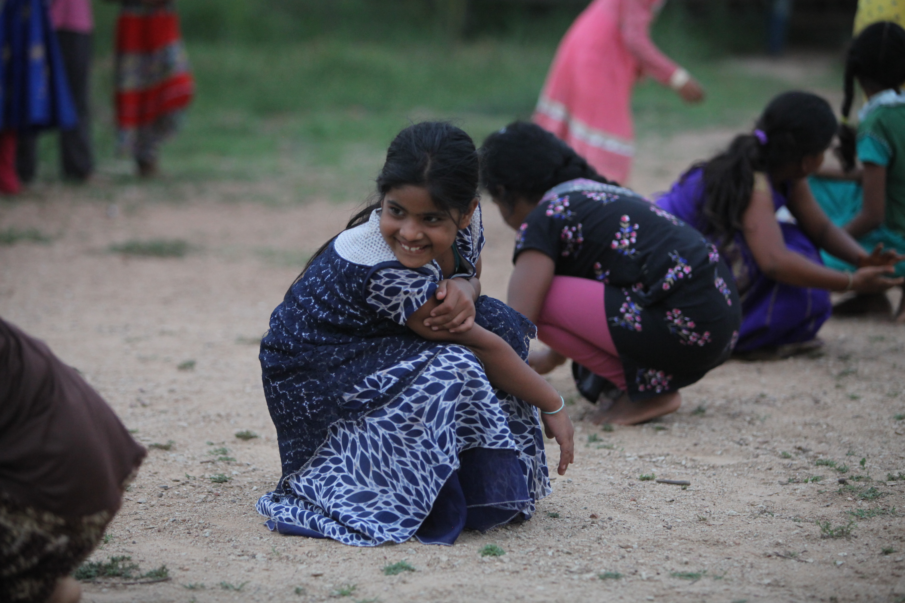

Impact
Care: The Heart of Aarti
Aarti Village
A Sanctuary of Love and Belonging
For girls who have nowhere else to turn — often facing unimaginable hardship like being orphaned or escaping domestic abuse — Aarti Village is a true home. Within our sustainable, green campus, girls live as sisters in small cottages, each guided by a dedicated house mother who fosters a loving family unit.
Here, they find not only safety and comfort but also the unconditional love that empowers them to dream of a brighter future. The deep familial bonds they forge at Aarti Village create a lifelong sense of unity and belonging that stays with them as they grow into women, engineers, artists, and mothers.
Aarti remains their cherished home — a place they return to celebrate life's milestones, a testament to the enduring love and connection they found here.

Our Reach
Care by the numbers
provided since 1992
living in the home
receiving benefits
enrolled
Bhavani's Story
Brought to Aarti at the age of 2 after her mother was murdered, Bhavani found safety, love, and a path forward at Aarti Home. Like hundreds of children before and after her, she grew up knowing she had a family — and that she mattered. Today she is a confident young woman with ambitions of her own.
Our Approach
Family Based Care
Beyond the residential home, Aarti's Family Based Care program extends support to vulnerable children in the surrounding community.
Community identification
Social workers identify at-risk children in villages around Kadapa who need support but can remain with their families.
Regular home visits
Trained social workers visit enrolled children regularly to monitor wellbeing, school attendance, and family stability.
Educational support
School fees, books, uniforms, and tutoring are provided to keep children in school and performing well.
Health & nutrition
Regular health check-ups, nutritious meals at school, and hygiene kits ensure children are physically healthy.
Family empowerment
Parents are linked to vocational training and welfare schemes so the whole family unit becomes self-sustaining.

Daily Life
Life at Aarti Village
Living Arrangements
Girls live in small cottages of 8–12, guided by a house mother. These intimate family units create real bonds of sisterhood and give each child a sense of belonging.
Always Being There
House mothers are available around the clock. Whether a child is unwell at night or needs help with homework, there is always a caring adult present.
Bonding with Children
Celebrations, meals, stories, and shared responsibilities build deep bonds. Girls learn empathy, cooperation, and love by living it daily.
Healthcare
Regular health check-ups, a visiting doctor, and a well-stocked medical room ensure every child's physical wellbeing is continuously monitored and addressed.